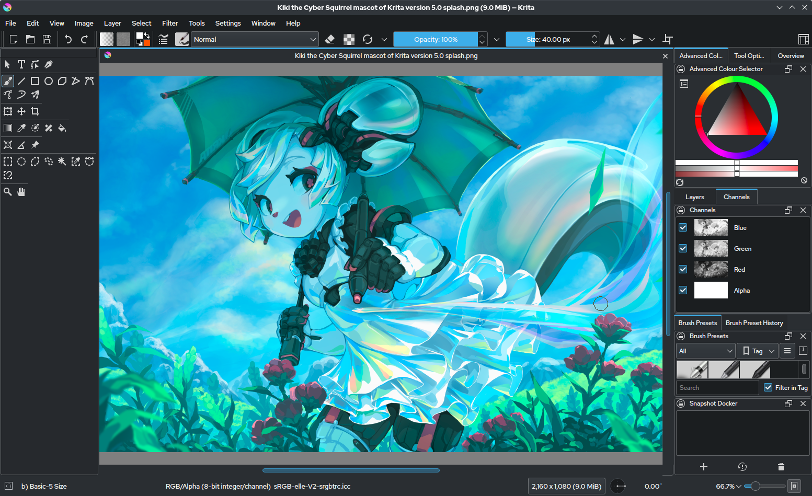
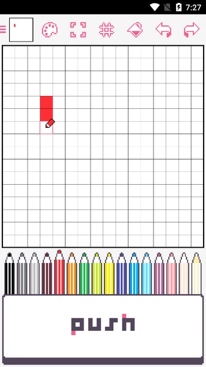

Editores de pixel
1. Aseprite
Este programa para hacer pixel art tiene una interfaz sencilla con herramientas intuitivas y fáciles de usar. Puedes hacer animaciones y dibujos de píxeles simétricos. Además, lograrás grandes diseños de pixel art con este software. ¿Quieres hacer tu primer pixel art en este potente programa? Entonces, dale un vistazo al siguiente tutorial de Pixel Nacho.
2. Piskel
Otro de los programas para hacer pixel art que te permite crear imágenes animadas de píxeles. Solo debes crear una nueva capa (frame) y dibujar a tu personaje en otra posición. De esta forma, podrás hacer una secuencia con tus creaciones. ¿Ya te animaste a usar uno de los mejores programas para hacer pixel art? De hecho, es bastante intuitiva y fácil de usar. Al entrar a la web, solo tienes que crear una cuenta y seleccionar la opción “Crear sprite”.
3. Gimp
Se trata de un programa para hacer pixel art que tiene funcionalidades parecidas a Photoshop, con la diferencia de que Gimp es gratis. En definitiva, es una buena herramienta para retocar y hacer fotomontajes de tus dibujos en pixel art.
4. Krita
Este programa para hacer pixel art en PC es gratis y lo puedes descargar en Windows, Mac y Linux. Es bastante intuitivo, ya que tiene herramientas que te permiten diseñar dibujos de pixel art fácilmente. Como plus, también puedes usarlo para otros tipos de ilustraciones.

5. Pixilart
Esta es otra opción de programa para hacer pixel art online. Su página web es bastante fácil de usar y tiene opciones para cambiar el brillo de los píxeles, de manera que puedas lograr un efecto más natural en tus creaciones. Además, puedes hacer animaciones y ver los trabajos de otros usuarios para inspirarte en tus dibujos.
6. Clip Studio Paint
Clip Studio Paint es otro software que te ayudará a diseñar tus dibujos de pixel art fácilmente. Lo único que debes hacer es crear una plantilla con cuadros de 1x1 y usar un pincel especial. Asimismo, si te interesan los cómics, es una buena herramienta para empezar a crearlos. ¡Uno de los programas para hacer pixel art que no puedes dejar escapar!7. Illustrator
Un programa de diseño gráfico que seguramente ya conoces, pero ¿sabías que también puedes hacer pixel art con él? ¡Así como lo lees! Sin duda, es una buena herramienta para crear piezas de pixel art, más aún si ya manejas el programa.
8. Excel
Probablemente no te lo esperabas, pero también puedes hacer un dibujo pixel art con Excel. Si no te has dado cuenta, cada celda puede representar un píxel para tu creación. Bastante ingenioso, ¿no crees? ¡Inténtalo! Estamos seguros que se convertirá en tu programa para hacer pixel art favorito.
9. Adobe Photoshop
Como puedes ver, existe una variedad de programas para hacer pixel art, pero también puedes hacer realidad tus ideas a través del software de imágenes 2D más popular. Sí, nos referimos a Photoshop. Este programa te permite crear animaciones o dibujos de píxeles de una manera muy fácil. ¿Estás listo para hacer tu propio pixel art? Ya sea que quieras crear una pieza o photo pixel para compartir en tu cuenta de redes sociales, o tal vez necesites un personaje para tu videojuego retro, crear diseños de píxeles para tus proyectos usando Adobe Photoshop es súper fácil.
10. Pixel Studio
Pixel Studio fue una de las primeras aplicaciones que hizo realidad el sueño de crear pixel art en dispositivos móviles y tabletas gráficas. Este editor de pixel art perteneciente a la compañía de videojuegos Hippo Games tiene más de dos millones de descargas en todo el mundo y ha sido traducido en 23 idiomas. Se trata de una de las aplicaciones para hacer pixel art más antiguas del mercado, que tiene muchas ventajas para los amantes de esta técnica. Entre sus principales beneficios podemos encontrar: Dispone de una gran cantidad de funciones para crear gráficas de pixel art. Además de todas las herramientas típicas, Pixel Studio admite capas, así como varios tipos de imágenes y archivos editables. Es compatible con el Samsung S-Pen y el Apple Pencil.
11. Dotpict
Dotpict es una app para hacer pixel art que fue creada por desarrolladores y artistas de píxeles. De hecho, la interfaz de la aplicación incluye texto e íconos en píxeles. En términos de funcionalidad, es muy similar a Pixilart. Lo cierto es que, este programa para hacer pixel art tiene lo esencial para dibujar de una manera fácil y fuera de lo común, además de contar con su propia comunidad de creadores de píxeles. Sin embargo, lo que distingue a Dotpict del resto de programas para hacer pixel art son las funciones de autoguardado y lapso de tiempo. El guardado automático garantiza que, incluso si la aplicación fallara por alguna razón, nunca perderás por completo el arte arte que estabas creando. Por otro lado, si activas la función de lapso de tiempo antes de comenzar a dibujar, podrás guardar una animación GIF de tu proceso de pixelado de principio a fin. Y lo mejor es que Dotpict te permite compartir tu propio arte, crear paletas de colores, participar en concursos de pixel art e interactuar con el arte de otros usuarios. ¡Todo de manera gratuita!A diferencia de la gráfica de alta resolución, el pixel art se enfoca en la estética retro, emulando los gráficos de videojuegos y ordenadores de las décadas pasadas. Cada imagen se compone meticulosamente, píxel a píxel, dando lugar a composiciones visuales distintivas y encantadoras.

12. Pixaki
Pixaki es una aplicación para hacer pixel art con impresionantes funciones. Se trata de una app con una interfaz multitáctil y paletas personalizables. Además, tiene soporte para 50 capas, animación y los tipos de archivos más populares. Si eres desarrollador de videojuegos te encantará este programa para hacer pixel art, ya que te permite exportar hojas de sprites o imágenes que muestran la secuencia de cada fotograma de un sprite animado. Asimismo, convertir un boceto en pixel art en Pixaki te resultará sencillo con las capas de referencia. A menudo, al cambiar el tamaño de tus propios bocetos para crear pixel art encima de ellos, se pierde gran parte de los detalles que tenía originalmente. Sin embargo, Pixaki te permite importar cualquier imagen (o varias imágenes a la vez) desde tu biblioteca de fotos en resolución completa, cambiar su tamaño y posicionarla en el lienzo.
13. Procreate
¿Sabías que también puedes crear diseños de pixel art en Procreate? Sí, esta aplicación de pintura digital para iPad también te permite lograr grandes dibujos y animaciones de píxeles. Con su extenso currículum de características, podrás sacarle el jugo a este potente programa para hacer pixel art. La función más útil que proporciona Procreate a los artistas de píxeles es Palette Capture. En ella, podrás crear tus propias paletas de colores, solo tendrás que importar una imagen desde la aplicación Fotos y Procreate automáticamente creará una paleta personalizada de acuerdo a los colores de esa imagen. Si bien no son características que usarás con frecuencia para el arte de píxeles, Procreate también tiene una enorme biblioteca de pinceles texturizados, controles de color precisos y una gran cantidad de impresionantes efectos digitales. La aplicación es de pago, pero vale la pena invertir unos cuantos centavos para hacer diseños únicos e impactantes.
14. Pyxel Edit
Es otro programa para hacer pixel art muy popular y amado por los artistas de píxeles en todo el mundo. De hecho, es conocido por su interfaz sencilla de usar. Si bien hay una versión gratuita disponible, carece de muchas de las funciones que hacen de Pyxel Edit una opción digna.Características de Pyxel Edit
La interfaz amigable es un gran punto a favor para Pyxel Edit. Este programa para hacer pixel art en PC contiene todas las funciones necesarias para crear imágenes estáticas y animadas, así como superponer fotogramas secuenciales en tu arte de píxeles. Asimismo, es conocido por sus poderosas herramientas de creación de mosaicos. Trabajar con mapas de mosaicos puede ser un proceso tedioso para cualquier artista, pero este editor de pixel art está para ayudarte con un conjunto de herramientas diseñadas para acelerar el flujo de trabajo. Siguiendo el punto anterior, los mosaicos se pueden importar y exportar fácilmente o convertir a tipos de archivo XML o JSON para su uso en motores de juegos. Los diseñadores de juegos que trabajan en múltiples mapas de mosaicos pueden encontrar que Pyxel Edit les ahorra mucho tiempo y molestias. Es simplemente una gran herramienta para cualquiera que se tome en serio (o se interese) en el arte arte de píxeles.